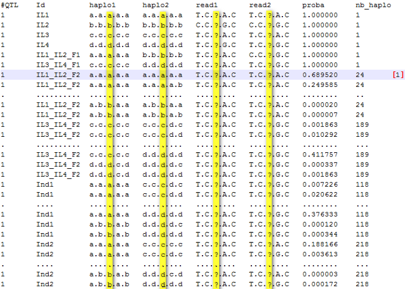
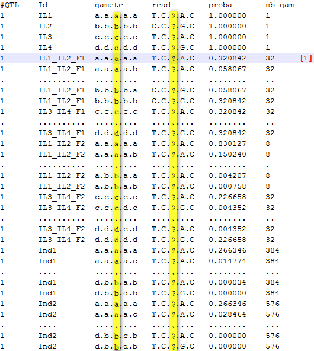

Results and output files interpretation (OptiMAS in command line)
As the program continues to run, it keeps you informed of progress. At the end of a run, questionable results (likely genotyping error regarding pedigree) may be displayed in the file [output_folder/date/events_summary.log]. It is recommended to always look at it before any interpretation and/or breeding decision. OptiMAS produces sets of files described below.
_diplotypes_set: probabilities of phased genotypes
Taking into account all information available (pedigree, distance between loci, molecular markers), OptiMAS computes for each QTL the probability of all possible phased genotypes (diplotypes). A diplotype is defined as the union of a pair of unambiguous haplotypes corresponding to parental gametes.
Results for each QTL (designated as x) are stored in a specific folder named "qtlx". Files [output_folder/date/each_qtl/qtlx/qtlx_diplotypes_set.txt] contain probabilities for diplotypes according to the following structure:

Figure 3: probabilities of phased genotypes (diplotypes) for each individual at QTL1
Columns of this file correspond to:
#QTL: index of the QTL.
Id: corresponds to the name of each individual.
haplo1, haplo2: possible pair of haplotypes (ie. phased genotype, also called diplotype) defined according to parental origin.
read1, read2: translation of haplo1 and haplo 2 in terms of observed marker alleles. Note that a given (read1, read2) combination may correspond to several (haplo1, haplo2) combinations.
proba: probability of this specific possible phased genotype (diplotype).
nb_haplo: number of possible diplotypes corresponding to theindividual.
Note: At the QTL 1, the individual IL1_IL2_F2 has 24 possible phased genotypes. One of them [1], which is the most likely given observed marker data, has a probability of 0.69. This genotype is (a/a) at the QTL position (3rd locus, see map file) and its full genotype (all loci: QTL and associated markers) is aaaaa/aaaaa. The individual Ind2 has more possible phased genotypes than Ind1 (Ind1 - 118, Ind2 - 218) because it was not genotyped (all possible diplotypes are considered).
_gametes_set: probabilities of gametes
The previous section underlined all the possible phased genotypes, along with their probabilities, taking into account the pedigree of individuals and their genotypes. With this information, OptiMAS determines, at each QTL, the set of possible gametes produced by each individual and estimates their probabilities.
Results for each QTL (designated as x) are stored in a specific folder named "qtlx". Files [output_folder/date/each_qtl/qtlx/qtlx_gametes_set.txt] contain probabilities for gametes according to the following structure:

Figure 4: probabilities of gametes for each individual at QTL1
Columns of this file correspond to:
#QTL: index of the QTL.
Id: corresponds to the name of each individual.
gamete: possible gamete defined according to parental origin.
read: translation of gamete in terms of observed marker alleles. Note that a given read may correspond to several gametes.
proba: probability of this specific possible gamete.
nb_gam: number of possible gametes corresponding to the individual.
Note: At the QTL number 1, the individual IL1_IL2_F1 has a probability of 100% to be heterozygous aaaaa/bbbbb (see previous section). In this case, the five loci are heterozygous and the number of possible gametes is 25 = 32. These 32 possible gametes have different probabilities depending on the recombination rates calculated from genetic distances (Haldane's map function used). The highest probability is that of non recombinant gametes (0.32 for both "aaaaa" and "bbbbb").
tab_homo_hetero: probabilities to be homozygous or heterozygous at the QTL positions
1. based on favorable / unfavorable allele grouping
Based on the phased genotype information (qtlx_haplotypes_set files), the probabilities to be homozygous / heterozygous, at the QTL positions, are computed according to favorable / unfavorable grouping of founder alleles (i.e. IL1- "a", IL2- "b", IL3 - "c", IL4- "d").
The structure for this file [output/date/tab_homo_hetero.txt] can be represented as follows:
| Id | MS | (+/+) | (-/-) | (+/-) | (+/+) | (-/-) | (+/-) | (+/+) | ||
|---|---|---|---|---|---|---|---|---|---|---|
| IL1 | 0.33333 | 0.33333 | 0.66666 | 0.00000 | 1.00000 | 0.00000 | 0.00000 | 0.00000 | ... | [2] |
| IL2 | 0.33333 | 0.33333 | 0.66666 | 0.00000 | 0.00000 | 1.00000 | 0.00000 | 1.00000 | ... | |
| IL3 | 0.33333 | 0.33333 | 0.66666 | 0.00000 | 0.00000 | 1.00000 | 0.00000 | 1.00000 | ... | |
| IL4 | 0.33333 | 0.33333 | 0.66666 | 0.00000 | 0.00000 | 1.00000 | 0.00000 | 0.00000 | ... | |
| IL1_IL2_F1 | 0.33333 | 0.00000 | 0.33333 | 0.66666 | 0.00000 | 0.00000 | 1.00000 | 0.00000 | ... | |
| IL3_IL4_F1 | 0.33333 | 0.00000 | 0.33333 | 0.66666 | 0.00000 | 1.00000 | 0.00000 | 0.00000 | ... | |
| IL1_IL2_F2 | 0.66137 | 0.65614 | 0.33333 | 0.01047 | 0.98658 | 0.00003 | 0.01335 | 0.98184 | ... | |
| IL3_IL4_F2 | 0.58105 | 0.49645 | 0.33422 | 0.16919 | 0.00000 | 0.99996 | 0.00000 | 0.89854 | ... | [1] |
| Ind1 | 0.58804 | 0.31309 | 0.13700 | 0.54989 | 0.00000 | 0.00671 | 0.99328 | 0.93928 | ... | [3] |
| Ind2 | 0.62126 | 0.31309 | 0.07055 | 0.61634 | 0.00000 | 0.00670 | 0.99328 | 0.93928 | ... |
Columns of this file correspond to:
QTLx (+/+): probability to be homozygous for a favorable allele at the QTL position or to be heterozygous with two different favorable alleles (when several parental alleles are considered as favorable).
QTLx (-/-): probability to be homozygous for an unfavorable allele at the QTL position or to be heterozygous with two different unfavorable alleles (when several parental alleles are considered as unfavorable).
QTLx (+/-): probability to be heterozygous at the QTL position (one favorable allele with one unfavorable).
All(+/+), All(+/-), All(-/-): mean of previous probabilities for all QTL together.
MS (Molecular Score): expected proportion of favorable alleles over all QTL (MS=All(++) + 0.5All(+-), see tab_scores).
Note:
[1] Individual IL3_IL4_F2 has a probability of 0.99996 to be homozygous unfavorable at QTL1. The sum of the probabilities (QTL1(+/+) + QTL1(-/-) + QTL1(+/-)) is not 1.0 because some rare phased genotypes were removed via the cut-off by default (see tab_check_diplo).
[2] The individual "IL1" has a molecular score of 0.333 because it is 100% homozygous favorable for the QTL1 and 0% for the two other QTL.
[3] Individual "Ind1" has a MS of 0.588 considering information at all three QTL:
| Id | MS | (+/+) | (-/-) | (+/-) | (+/+) | (-/-) | (+/-) | (+/+) | (-/-) | (+/-) | (+/+) | (-/-) | (+/-) |
|---|---|---|---|---|---|---|---|---|---|---|---|---|---|
| Ind1 | 0.588 | 0.313 | 0.137 | 0.549 | 0.000 | 0.006 | 0.993 | 0.939 | 0.000 | 0.060 | 0.000 | 0.403 | 0.596 |
2. in terms of parental alleles
In a multi-allelic context, several parental alleles can be regrouped and considered as favorable at the QTL position (see the summarized table above). Nevertheless, it can be interesting in some cases to know the detailed probabilities of the possible genotypes in terms of the parental origin of alleles.
Results for each QTL (designated as x) are stored in a specific folder named "qtlx". Files [output_folder/date/each_qtl/qtlx/qtlx_homo_hetero.txt] contain details about parental allele origins at QTL positions according to the following structure (QTL 2 example):
IL1 Homo(+/+) = 0.000000 Hetero(+/-)= 0.000000 Homo(-/-) = 1.000000 a:a = 1.000000 IL2 Homo(+/+) = 1.000000 b:b = 1.000000 Hetero(+/-)= 0.000000 Homo(-/-) = 0.000000 IL3 Homo(+/+) = 1.000000 c:c = 1.000000 Hetero(+/-)= 0.000000 Homo(-/-) = 0.000000 IL4 Homo(+/+) = 0.000000 Hetero(+/-)= 0.000000 Homo(-/-) = 1.000000 d:d = 1.000000 IL1_IL2_F1 Homo(+/+) = 0.000000 Hetero(+/-)= 1.000000 a:b = 1.000000 Homo(-/-) = 0.000000 IL3_IL4_F1 Homo(+/+) = 0.000000 Hetero(+/-)= 1.000000 c:d = 1.000000 Homo(-/-) = 0.000000 IL1_IL2_F2 Homo(+/+) = 0.981847 b:b = 0.981847 Hetero(+/-)= 0.018057 a:b = 0.018057 Homo(-/-) = 0.000082 a:a = 0.000082 IL3_IL4_F2 Homo(+/+) = 0.898542 c:c = 0.898542 Hetero(+/-)= 0.098733 c:d = 0.098733 Homo(-/-) = 0.002710 d:d = 0.002710 Ind1 Homo(+/+) = 0.939286 b:c = 0.939286 Hetero(+/-)= 0.060239 a:c = 0.008636 b:d = 0.051602 Homo(-/-) = 0.000474 a:d = 0.000474 Ind2 Homo(+/+) = 0.939286 b:c = 0.939286 Hetero(+/-)= 0.060239 a:c = 0.008636 b:d = 0.051602 Homo(-/-) = 0.000474 a:d = 0.000474
Note: at QTL2 position, favorable alleles are "b" and "c" (see .map file). Individual "Ind1" has a very high probability to be homozygous favorable Homo(+/+) = 0.939286. We can see that this is due to a high probability of being heterozygous for favorable alleles "b" and "c" (b:c = 0.939286).
tab_scores: prediction of genetic values
This table summarizes and presents the molecular scores for each/all QTL and additional indexes of interest. The default structure of this file [output_folder/date/tab_scores.txt] can be represented as follows:
| Id | MS | Weight | UC | No.(+/+) | No.(-/-) | No.(+/-) | No.(?) | QTL1 | QTL2 | QTL3 |
|---|---|---|---|---|---|---|---|---|---|---|
| IL1 | 0.3333 | 0.3333 | 1.0000 | 1 | 2 | 0 | 0 | 1.0000 | 0.0000 | 0.0000 |
| IL2 | 0.3333 | 0.3333 | 1.0000 | 1 | 2 | 0 | 0 | 0.0000 | 1.0000 | 0.0000 |
| IL3 | 0.3333 | 0.3333 | 1.0000 | 1 | 2 | 0 | 0 | 0.0000 | 1.0000 | 0.0000 |
| IL4 | 0.3333 | 0.3333 | 1.0000 | 1 | 2 | 0 | 0 | 0.0000 | 0.0000 | 1.0000 |
| IL1_IL2_F1 | 0.3333 | 0.3333 | 1.7071 | 0 | 1 | 2 | 0 | 0.5000 | 0.5000 | 0.0000 |
| IL3_IL4_F1 | 0.3333 | 0.3333 | 1.7071 | 0 | 1 | 2 | 0 | 0.0000 | 0.5000 | 0.5000 |
| IL1_IL2_F2 | 0.6613 | 0.6613 | 1.9841 | 2 | 1 | 0 | 0 | 0.9932 | 0.9908 | 0.0000 |
| IL3_IL4_F2 | 0.5810 | 0.5810 | 1.7431 | 1 | 1 | 0 | 1 | 0.0000 | 0.9479 | 0.7952 |
| Ind1 | 0.5880 | 0.5880 | 2.4712 | 1 | 0 | 1 | 1 | 0.4966 | 0.9694 | 0.2980 |
| Ind2 | 0.6212 | 0.6212 | 2.5709 | 1 | 0 | 2 | 0 | 0.4966 | 0.9694 | 0.3977 |
Columns of this file correspond to:
QTLx: expected proportion of favorable allele (as defined after grouping) at QTLx, i.e. 1, 0.5, 0.0 for individuals with genotypes +/+, +/- and -/-, respectively (see table homo_hetero).
MS - Molecular Score: expected proportion of favorable alleles over all QTL, i.e. the average of QTLx values. MS varies between 0 for an individual which does not carry any of the favorable alleles to 1 for an individual which is homozygote for the favorable alleles (i.e. it corresponds to the target genotype).
Weight (weighted MS): weighted average of QTLx values, to give more or less importance to the different QTL (only used via the GUI).
UC - Utility criterion: combines the molecular score with the expected variance of the MS of the gametes that can be produced by the individual. UC is based on the estimation of the expected number of favorable alleles carried by the superior 5% gametes produced by the individual. For a same MS, this criterion favors individuals with no unfavorable alleles fixed. This score ranges from 0 to the number of QTL. Note that present version of UC estimation assumes independence between QTL and should be considered as only indicative in case of linked QTL. It also assumes that the distribution of scores can be approximated by a normal distribution (which is not valid in case of small number of heterozygous QTL).
No.(+/+): number of QTL homozygous for favorable allele(s). A given QTL is considered as homozygous for favorable allele(s) when prob (+/+) exceeds a default threshold value of 0.75. This threshold can be modified via the GUI (see Fig. 9) resulting in an update of this column.
No.(-/-): number of QTL homozygous for unfavorable allele(s). A given QTL is considered as homozygous for unfavorable allele(s) when prob (-/-) exceeds a default threshold value of 0.75. This threshold can be modified via the GUI (see Fig. 9) resulting in an update of this column.
No.(+/-): number of QTL heterozygous with both favorable and unfavorable allele(s). A given QTL is considered to belong to this category when prob (+/-) exceeds a default threshold value of 0.75. This threshold can be modified via the GUI (see Fig. 9) resulting in an update of this column.
No.(?): number of QTL defined as uncertain. Concerns QTL which are not attributed to any of the three previous categories.
Note: At QTL1, individual IL1_IL2_F1 has a 100% probability to be heterozygous aaaaa/bbbbb (see section 4.2.1). The genotype at this QTL position is "a/b" (3rd locus) and "a" is the favorable allele. The molecular score for this individual will be: MSQTL1 = [p("a/b") x dose] / 2 = (1 x 1) / 2 = 0.5. The genetic value of the individual ("MS" column) is obtained by averaging the molecular score for all QTL: MS = (0.5 + 0.5 + 0.0) / 3 = 0.33.
tab_parents: estimated probabilities of parental alleles
Beyond global scores presented above, it can be interesting to display the probability of having received a given parental allele at individual QTL positions and globally across QTL.
The default structure for this file [output_folder/date/tab_parents.txt] can be represented as follows:
| Id | MS | (a) | (b) | (c) | (d) | (a) | (b) | (c) | (d) | ... |
|---|---|---|---|---|---|---|---|---|---|---|
| IL1 | 0.3333 | 1.0000 | 0.0000 | 0.0000 | 0.0000 | 1.0000 | 0.0000 | 0.0000 | 0.0000 | ... |
| IL2 | 0.3333 | 0.0000 | 1.0000 | 0.0000 | 0.0000 | 0.0000 | 1.0000 | 0.0000 | 0.0000 | ... |
| IL3 | 0.3333 | 0.0000 | 0.0000 | 1.0000 | 0.0000 | 0.0000 | 0.0000 | 1.0000 | 0.0000 | ... |
| IL4 | 0.3333 | 0.0000 | 0.0000 | 0.0000 | 1.0000 | 0.0000 | 0.0000 | 0.0000 | 1.0000 | ... |
| IL1_IL2_F1 | 0.3333 | 0.5000 | 0.5000 | 0.0000 | 0.0000 | 0.5000 | 0.5000 | 0.0000 | 0.0000 | ... |
| IL3_IL4_F1 | 0.3333 | 0.0000 | 0.0000 | 0.5000 | 0.5000 | 0.0000 | 0.0000 | 0.5000 | 0.5000 | ... |
| IL1_IL2_F2 | 0.6613 | 0.5992 | 0.4007 | 0.0000 | 0.0000 | 0.9932 | 0.0067 | 0.0000 | 0.0000 | ... |
| IL3_IL4_F2 | 0.5810 | 0.0000 | 0.0000 | 0.5507 | 0.4491 | 0.0000 | 0.0000 | 0.4999 | 0.4999 | ... |
| Ind1 | 0.5880 | 0.3328 | 0.1671 | 0.2332 | 0.2667 | 0.4966 | 0.0033 | 0.0237 | 0.4762 | ... |
| Ind2 | 0.6212 | 0.2996 | 0.2003 | 0.2754 | 0.2245 | 0.4966 | 0.0033 | 0.2499 | 0.2499 | ... |
Columns of this file correspond to:
QTLx(parental allele): expected proportion of parental allele at QTLx.
All(parental allele): average of QTLx values over all QTL.
MS (Molecular Score): expected proportion of favorable alleles over all QTL.
tab_check_diplo: sum of phased genotypes probabilities (with the cut-off)
Within OptiMAS, some algorithms such as selfing may become memory and/or time consuming depending on the complexity of your MAS design. To overcome this "problem" it is possible to use a cut-off on the probability of keeping a phased genotype (i.e. cut-off diplotypes = 0.000001 by default). Thus, rare phased genotypes are discarded in probability computation, which considerably reduces the computation time. At the end of a run, a file [output_folder/date/tab_check_diplo.txt] is created evaluate the impact of cut-off on such eliminations, at individual QTL locations and globally. The default structure for this file can be represented as follows:
| Id | MS | All | QTL1 | QTL2 | QTL3 |
|---|---|---|---|---|---|
| IL1 | 0.333333 | 1.000000 | 1.000000 | 1.000000 | 1.000000 |
| IL2 | 0.333333 | 1.000000 | 1.000000 | 1.000000 | 1.000000 |
| IL3 | 0.333333 | 1.000000 | 1.000000 | 1.000000 | 1.000000 |
| IL4 | 0.333333 | 1.000000 | 1.000000 | 1.000000 | 1.000000 |
| IL1_IL2_F1 | 0.333333 | 1.000000 | 1.000000 | 1.000000 | 1.000000 |
| IL3_IL4_F1 | 0.333333 | 1.000000 | 1.000000 | 1.000000 | 1.000000 |
| IL1_IL2_F2 | 0.661379 | 0.999948 | 0.999975 | 0.999987 | 0.999883 |
| IL3_IL4_F2 | 0.581056 | 0.999879 | 0.999962 | 0.999985 | 0.999688 |
| Ind1 | 0.588043 | 0.999998 | 0.999996 | 0.999999 | 1.000000 |
| Ind2 | 0.621266 | 0.999992 | 0.999983 | 0.999999 | 0.999994 |
Columns of this file correspond to:
QTLx: sum of the probabilities to be homozygous (un)favorable and heterozygous at each QTL position, as displayed in the file "tab_homo_hetero.txt". When the "QTL" column is close to one, the sum of probabilities of removed diplotypes (via the cut-off) is negligible.
All: refers to the mean for all QTL.
MS (Molecular Score): expected proportion of favorable alleles over all QTL.
events_summary.log: questionable results
Questionable results are displayed in the file [output_folder/date/events_summary.log] (see below). It is recommended to always check it before any interpretation (if a warning message appeared). An empty file means that no errors have been found during the execution. Otherwise, this file contains the name of individuals with questionable genotypes at considered QTL positions. These are defined as individual x QTL combinations for which no diplotype passing the cut-off threshold could be found. Three main causes can be distinguished:
- Individuals have genotype data inconsistent in light of their ancestry (which may reveal either a genotyping error or an error in the declared pedigree).
- Individuals display very unlikely genotypes relative to their parents (i.e. genotypes that can only be obtained assuming unlikely recombination events).
- The cut off (threshold value) set by user for keeping diplotypes is too high.
SUMMARY [Questionable results at markers/QTL sorted by Id] -- Id: ind1 P1: 115_1 P2: 115_2 Cycle:F1 QTL: 1 2 Id: ind4 P1: 1814 P2: 115 Cycle:F1 QTL: 1 Id: ind33 P1: 1145 P2: 115 Cycle:F1 QTL: 1 3 Id: ind777 P1: 3734 P2: 3902 Cycle:F2 QTL: 1 4 7
Note that a genotyping error at generation n affects the results for its progeny even if at generation n+1, individuals at this generation have correct genotypes. See the tools section for more details on the procedure to adopt in case of a warning message at the end of a run.